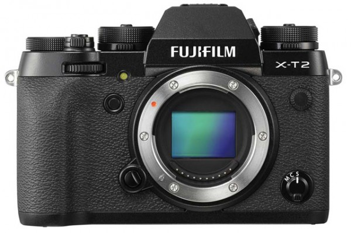

个人资料

- 创建日期：2016年7月7日
- 个性签名：be yourself
富士正式发布旗舰级无反相机X-T2
2014年起富士正式进入双旗舰时代，X-Pro系列无反相机主打复古旁轴相机外观，以混合式取景器为特点，X-T则使用了传统胶片单反相机的外观，两部 相机推出后都笼络了大量粉丝。今年年初，富士率先更新了X-Pro产品线并推出第二代产品。然而，受困于熊本地震的影响，同时也为了防止对X-Pro2的 市场造成冲击，X-T2的发布日期则被一拖再拖。时隔近6个月，北京时间今天下午，富士终于正式发布了X-T2旗舰级无反相机。

机身图赏
总的来说，X-T2与先期发布的X-Pro2在参数方面有许多相似之处。例如，新机搭载了与富士X-Pro2相同的2430万像素APS-C画幅CMOS和X Processor Pro图像处理器，并具备同样的ISO范围和快门速度。不过，为凸显其更为专业化的设计，X-T2启用了全新设计的325点混合式自动对焦系统，并首次引入了30fps 4K视频拍摄功能，同时也成为了首部具备该功能的富士相机。
此外，为进一步提升相机取景方面的性能，富士着力为X-T2打造了一块刷新率达到100fps的236万画点EVF，并配备了一块3英寸162万画点的3向倾斜式LCD。最后，X-T2还有一项绝技就是引入了全新的高速模式。在搭配专属竖拍电池手柄时，X-T2的最高连拍速度将可从5fps提升至11fps。据悉，富士X-T2的单机官方售价为1,399英镑（约12,084元人民币），套机售价1,649英镑（约14,244元人民币），搭配富士18-55mm f/2.8-4镜头，预计9月8日正式上市销售。
- 富士X-T2机身规格：
- 传感器：2430万像素APS-C画幅X-Trans CMOS
- 处理器：X Processor Pro 图像处理器
- ISO范围：ISO200-12800（可扩展至100-51200）
- 测光系统：256分区测光系统
- 快门速度：机械快门最高1/8000s，电子快门速度最高1/32000s
- 最高连拍速度：8fps，搭配竖拍手柄连拍速度提升至11fps，实时取景模式下5fps
- 自动对焦系统：325点混合式自动对焦系统
- 视频：可拍摄30fps 4K视频和60fps全高清视频
- 闪光同步率：1/250s
- 曝光补偿：+/-5EV
- 电子取景器：236万画点EVF，刷新率100fps，0.77x放大倍率
- 显示屏：3英寸162万画点3向倾斜式LCD
- 内置滤镜：16种胶片模拟效果、13种创意滤镜
- 存储介质：双SD卡槽，支持UHS-II标准
- 机身材质：镁合金机身，具备防尘、防滴溅功能
- 其他：内置Wi-Fi
- 电池：NP-W126S电池，可拍摄340张照片
- 机身尺寸：133 x 92 x 49mm
- 机身重量：457g